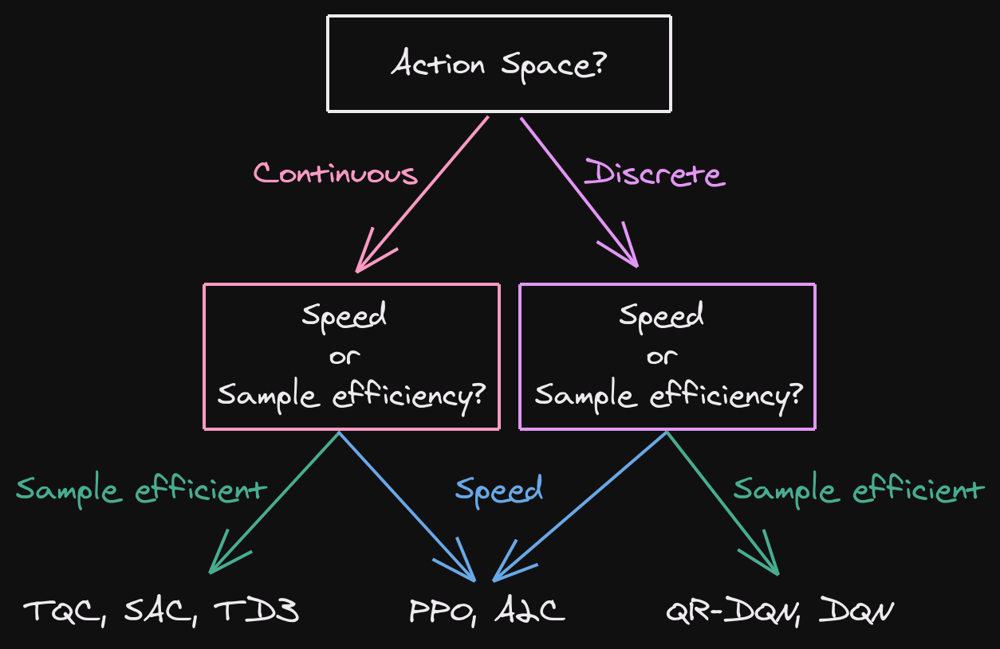

OpenAI Gym
Reinforcement Learning Environments

Outline
- What is Gym?
- RL on a custom task
What is Gym? (1/2)
An API
import gym
# Create the environment
env = gym.make("CartPole-v1")
# Reset env and get first observation
obs = env.reset()
# Step in the env with random actions
# and display the env
for _ in range(100):
# Display the env
env.render(mode="human")
action = env.action_space.sample()
# Retrieve new observation, reward, termination signal
# and additional infos
obs, reward, done, info = env.step(action)
# End of an episode
if done:
obs = env.reset()
Live Demo
What is Gym? (2/2)
A collection of environments.
Questions?
RL in Practice: Tips and Tricks
Full video: https://rl-vs.github.io/rlvs2021/tips-and-tricks.html
Today: only about how to define custom task
Defining a custom task
- observation space
- action space
- reward function
- termination conditions
Choosing the observation space
- enough information to solve the task
- do not break Markov assumption
- normalize!
CartPole Observation Space
"""
Observation:
Type: Box(4)
Num Observation Min Max
0 Cart Position -4.8 4.8
1 Cart Velocity -Inf Inf
2 Pole Angle -0.418 rad (-24 deg) 0.418 rad (24 deg)
3 Pole Angular Velocity -Inf Inf
"""
high = np.array(
[
self.x_threshold * 2,
np.finfo(np.float32).max,
self.theta_threshold_radians * 2,
np.finfo(np.float32).max,
],
dtype=np.float32,
)
self.observation_space = gym.spaces.Box(low=-high, high=high, dtype=np.float32)
Choosing the Action space
- discrete / continuous
- complexity vs final performance
CartPole Observation Space
"""
Actions:
Type: Discrete(2)
Num Action
0 Push cart to the left
1 Push cart to the right
"""
self.action_space = gym.spaces.Discrete(2)
Continuous action space: Normalize? Normalize!
from gym import spaces
# Unnormalized action spaces only work with algorithms
# that don't directly rely on a Gaussian distribution to define the policy
# (e.g. DDPG or SAC, where their output is rescaled to fit the action space limits)
# LIMITS TOO BIG: in that case, the sampled actions will only have values
# around zero, far away from the limits of the space
action_space = spaces.Box(low=-1000, high=1000, shape=(n_actions,), dtype="float32")
# LIMITS TOO SMALL: in that case, the sampled actions will almost
# always saturate (be greater than the limits)
action_space = spaces.Box(low=-0.02, high=0.02, shape=(n_actions,), dtype="float32")
# BEST PRACTICE: action space is normalized, symmetric
# and has an interval range of two,
# which is usually the same magnitude as the initial standard deviation
# of the Gaussian used to sample actions (unit initial std in SB3)
action_space = spaces.Box(low=-1, high=1, shape=(n_actions,), dtype="float32")

Choosing the reward function
- start with reward shaping
- primary / secondary reward
- normalize!
CartPole Reward
if not done:
reward = 1.0
Termination conditions?
- early stopping
- special treatment needed for timeouts
- should not change the task (reward hacking)
CartPole Termination
done = bool(
x < -self.x_threshold
or x > self.x_threshold
or theta < -self.theta_threshold_radians
or theta > self.theta_threshold_radians
)
# in the registration:
register(
id="CartPole-v1",
entry_point="gym.envs.classic_control:CartPoleEnv",
max_episode_steps=500,
reward_threshold=475.0,
)
Which algorithm to choose?
